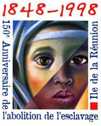

 1848 est l’année de l’abolition de l’esclavage en France et à la Réunion. Cette date est importante pour l’ensemble des habitant de l’île parce que c’est l’esclavage puis l’engagement qui ont construit la multiplicité ethnique de l’île. On fête le cent-cinquantenaire de cet événement le 20 décembre 1998 mais déjà beaucoup s’y préparent. Je vous propose de faire de même avec le site ouvert de la célébration du « 20 desamb », (20desamb.com est aujourd’hui hors ligne et archivé) ouvert à tous les amoureux de la liberté.
Le 20 décembre ne fait pas partie des traditions ancestrales de la Réunion. Il a été fêté la première fois en 1984 dans la commune de Sainte-Marie. Juste l’année suivante, les autorités de l’île ont décrété que ce jour serait jour férié. De simple fêt’ caf, le 20 désamb est devenu la fête nationale réunionnaise, avec pétards et bals populaires; non pas que le 14 juillet soit oublié sur cette île française, c’est juste que le 20 désamb, à la Réunion, c’est l’été !
Le Musée Léon Dierx de Saint-Denis a ouvert une exposition sur l’esclavage à la Réunion et dans l’Océan Indien. Cette exposition est visible du 14 novembre 1998 au 25 avril 1999. Elle est aussi expliquée dans ce site web réalisé avec l'aide du conseil général. L'exposition se divide en six parties présentant une période historique ou un angle d'étude de l'esclavage.
Le site raconte aussi comment, en dehors de ce jour férié du 20 décembre, des écoliers sont allés visiter le musée de Villèle, sur l'ancien domaine Desbassyns, riche famille propriétaire possédant de nombreux esclaves. Une visite pour le 150 ème anniversaire de l'abolition de l'esclavage.
Le point de repère le plus réputé du site est la chapelle pointue, témoignage de l'èvengélisation forcée des esclaves. On y visite aussi la maison des maîtres montrant la réussite économique de cette famille et son oppulance. Mais on y visite aussi les installations nécessaires à la vie de 400 esclaves sur ces mêmes terres : Des cases, dont la maison des célibataires, une cuisine, un hôpital. L'hôpital peut être témoigner que ces propriétaires avait le soucis de la bonne santé de leur esclaves mais en fait les élèves nous rappellent que le code noir obligeait les propriétaires de plus de 30 esclaves à avoir un hôpital, une obligation que les propriétaires suivaient volontiers s'ils tennaient à leurs investissements.
En résumé, le site 20desamb.com célèbre le centcinquantenaire de la fin de l’esclavage à la Réunion en présentant des expos, des visites scolaires et même un colloque. Mais le reste de la population célèbrera aussi la fêt caf du 20 décembre 1998 mais ce sera peut-être juste en faisant la fête.